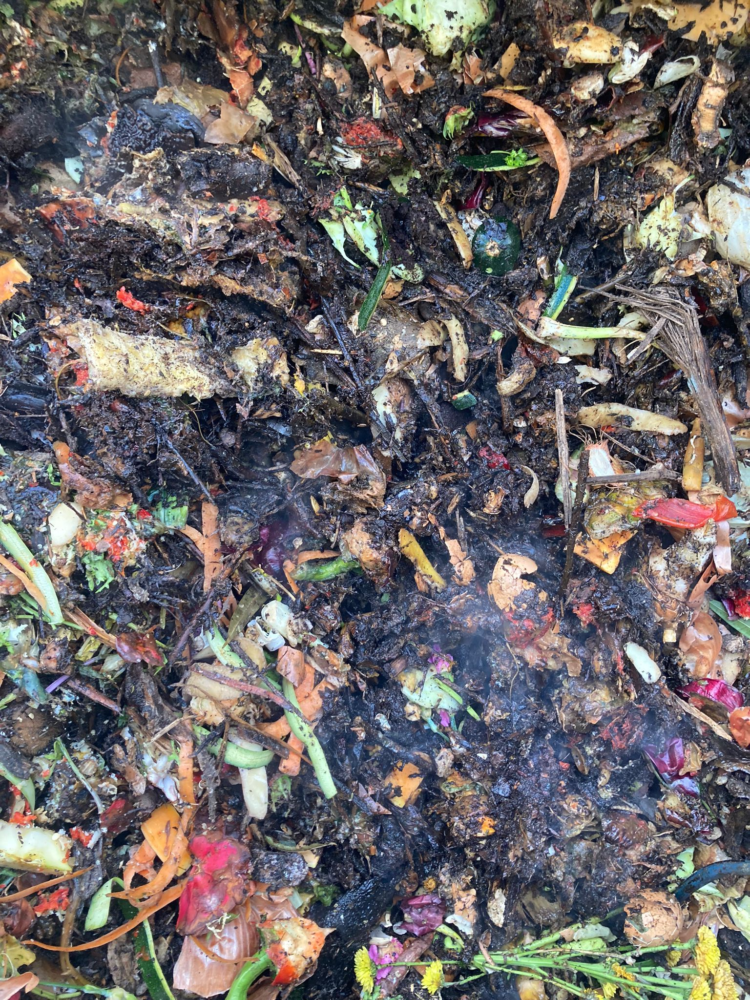
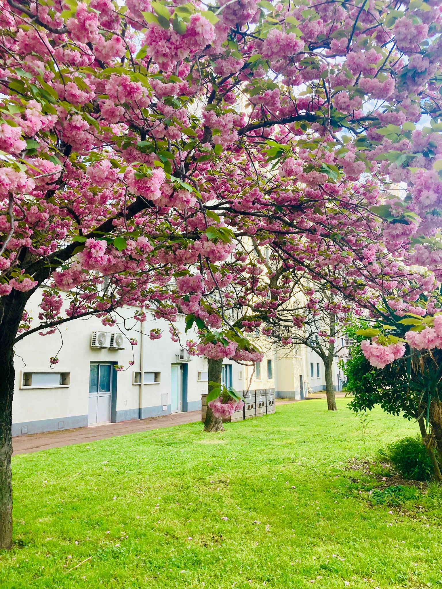

Si vous êtes arrivé jusqu'ici, c'est que vous avez décidé de plonger les mains dans le tas, littéralement parlant ! Mais ne vous inquiétez pas, nous ne vous demanderons pas de mettre votre dignité au compost.
Imaginez un monde où vos déchets deviennent de véritables trésors organiques, où les épluchures de carottes se transforment en or brun. Oui, c'est le monde merveilleux du compostage, où la pourriture devient une œuvre d'art écologique !
Ici, nous vous proposons un voyage au cœur de la transformation : du résidu alimentaire banal à la richesse nourricière du sol. Vous vous sentez prêt à relever le défi ? Alors, enfilez vos bottes et préparez-vous à plonger dans l'univers palpitant du compostage !
Mais attention, le compostage n'est pas seulement une question de remuer de la terre et de se mettre des épluchures sur la tête. C'est une véritable science, une alchimie délicate entre carbone et azote, entre décomposition et régénération. Nous vous guiderons à travers ce dédale de déchets.
Prêt à découvrir comment transformer votre cuisine en laboratoire de la vie ? Alors, suivez-nous dans notre quête pour sauver la planète, une épluchure à la fois !
Et n'oubliez pas, la seule chose que vous enterrerez, ce sont vos préjugés sur le compostage !